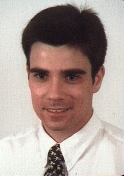

-

- People who translated XFCE's resources in their mother tangue :
- Giorgio Marzano (marzano@inf.uniroma3.it)
- Carsten Meyer (meta@nordnetz.de)
- Marcos Mezo (mmezo@aero.upm.es)
- Andras Kadar (kadara@eik.bme.hu)
- Joel Bernier, from Logiciels du Soleil (kheops@moe.acticiel.com), who is hosting my site from its very beginning.
- Ted Sikora (tsikora@tiac.net) who is hosting the mirror site in U.S., and who's planning a port of XFce to OS/2
- People who wrote programs that inspired XFce :
- Roman Mitnitski for Tycoon
- Robert Nation for FVWM
- Charles Hines for FVWM2
XFCE has been written by Olivier Fourdan (fourdan@csi.com). This project began in January 1997 while I was working in 3x8, 7 days a week. Thanks to that, I had a lot of time to spend.
I'm currently working as an IS production engineer on Tandem, Unix and Digital VMS systems, for a big american company in telecomunications and semi-conductors. XFCE has nothing to do with none of my employers, past or present. Tkanks to my education, a Master degree in Computer Science from Université Paul Sabatier of Toulouse, France, and a practice in computers for years, I have a good techincal knowledge in several languages (C/C++, Cobol, Ada, Pascal, Eiffel, Lisp, etc.) and Operating systems (UNIX -SUN, HP, Silicon Graphics and LINUX-, VMS -Digital-, Guardian -Tandem-, MS-DOS, MAC-OS) .
XFCE 2 and XFwm have been released in June 1998. A lot of
people have been involved in this project, directly or not, on purpose
or not :
If you have any feedback about XFCE, or if you want to make suggestions, you love or dislike XFCE, come on, write me :